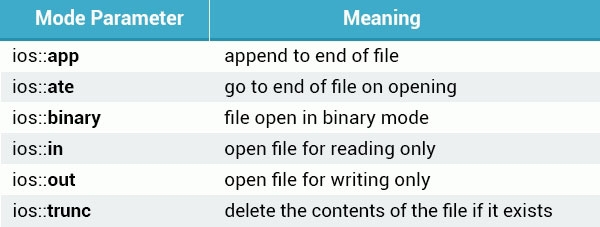

C++ 入门教程之八 -- Templates - Exceptions - Files
function template
使用 function 和 class 使我们编程更加简单及易操作。但是它们仍然受限于 c++ 编程规范，在定义它们的参数时必须指定参数的类型。例如：
int sum(int a, int b) {
return a+b;
}
int main () {
int x=7, y=15;
cout << sum(x, y) << endl;
}以上示例中，需要我们定义sum function 需要传入两个 int 型数据，返回其相加结果。在 main 中调用 sum function。
sum() 可以正确的执行指令，但它的限制是必须传入 int 类型的数据。
如果需要实现两个 double 类型数据相加，需要再次定义新 funtion：
double sum(double a, double b) {
return a+b;
}使用 function template 能够让我们只定义一个 sum() 来适用于所有类型的数据。
使用关键词 template 来定义一个 function template，在尖括号<>内定义通用数据类型：
template <class T>
关键词 class 表示一个申明要定义 generic 通用数据类型，注意不要和我之前学习的 class 混淆。
也可以使用关键词 typename：
template <typename T>
T 表示我们的 generic 通用数据类型名称，在后续中可以使用此名称代表数据类型，可以是任意自定义字符。
修改我们的示例：
#include <iostream>
using namespace std;
template <class T>
T sum(T a, T b)
{
return a + b;
}
int main()
{
int x=7, y=15;
cout << sum(x, y) << endl;
double a=7.15, b=15.54;
cout << sum(a, b) << endl;
return 0;
}我们在 function 中建立了一个 generic data type 通用数据类型 T，返回值和传入参数类型都为 T。在 mian 中调用时，会根据实际传入数据类型来动态确定 T 的实际类型。
function template 可以节省编程中很多时间，因为只需要一次定义就可以兼容不同的数据类型。
我们也可以同时定义多个 generic data type，使用逗号, 分隔多个定义类型：
template <class T, class U>
T smaller(T a, U b) {
return (a < b ? a : b);
}
int main () {
int x=72;
double y=15.34;
cout << smaller(x, y) << endl;
}以上示例定义了两个通用数据类型，返回值类型为第一种数据类型。(a < b ? a : b) 表达式的意思是：判断 a 是否小于 b，如果结果为 true 则返回 a 的值，如果结果为 flase 返回 b 的值，两个参数可以是不同数据类型，如：int 和 double。
在 mian 中调用 smaller function，返回结果为两个参数中较大的那个的值，由于返回值类型为第一个定义数据类型 T，而我们调用时传入的第一个参数类型为 int，所以返回结果也为 int 型。
需要注意的是在一旦定义了 function template，在 function 中就一定要使用定义的那些通用数据类型，否则编译器会报错。
class template
同样也可以定义 class template，允许 class 的元素类型为 generic data type。语法如下：
template <class T>
class MyClass {
};类似于 function template，多个 generic data type 使用逗号, 分隔：
template <class T,class U>
下面举例说明使用方法：
template <class T>
class Pair {
public:
Pair (T a, T b):
first(a), second(b) {
}
private:
T first, second;
};以上建立了一个 class template，类型为 T，通过构造器对 private 里的两个 T 类型的参数初始化数据。
在 class template 外定义 function，如 class 大括号外或一个单独文件，需要在 class 后标记 class template 内定义过的 generic type。例如在以上示例的 class 外建立 bigger function：
template <class T>
class Pair {
public:
Pair (T a, T b):
first(a), second(b) {
}
T bigger();
private:
T first, second;
};
template <class T>
T Pair<T>::bigger() {
return (first>second ? first : second);
}上面示例中使用了 scope resolution operator - 范围解析符:: 来表示外部的 Pair() function 属于哪个 class，在头文件章节介绍过，具体参考：C++ 入门教程之六 -- Classes 实践。
bigger function 返回 class 两个属性变量中较大的值。
在 main 中实例化 Pair class 时需要使用尖括号定义当前实际要使用的数据类型，如 int 类型：
void main() {
Pair<int> obj(11, 22);
cout << obj.bigger() << endl;
}也可以定义 double 类型：
void main() {
Pair<double> obj(11.23, 22.56);
cout << obj.bigger() << endl;
}template 特例
在前面介绍的 class template 中，实例化 object 时定义不同的数据类型会执行同样的 function 指令内容。template specialization 特例允许当我们定义某些特定数据类型作为 template type 时执行和通用指令不同的内容。
下面举例说明，当定义数据类型为 char 时执行和其他数据类型不同的指令，先建立一个常规 class template：
template <class T>
class MyClass {
public:
MyClass(T x) {
cout << x << " - not a char" << endl;
}
};以上 class 用来作为常规数据类型情况下的处理。
为了处理当数据类型为 char 时的情况，我们建立一个 class specialization 特例：
template <>
class MyClass<char> {
public:
MyClass(char x) {
cout << x << " - is a char" << endl;
}
};以上代码中，首先在 class 前声明了一个没有参数的 template <>，这是为了区别于通用数据类型情况，表明此 class specialization 里的数据类型是已知的和特定的。而由于这个 class 依然是属于 class template 类型的，只是一个特例情况的处理，所以这句声明不能省略。
在 class template 名称后面的 <char> 定义了此 clas 属于对哪种 specialization 特例数据类型的处理。当我们实例化时，如果定义的数据类型是属于 template specialization 里定义的类型时，会将此 class 作为实例化对象。
需要注意得是对常规数据类型的 class template 和特定类型数据的 class template 两者的 body 内容是完全独立互不影响的，specialization template 并不从 generic template 里继承任何元素，如果需要的话可以编写完全不同的功能。
在 main 中使用不同数据类型进行实例化测试：
int main() {
MyClass<int> obj1(22);
MyClass<double> obj2(11.34);
MyClass<char> obj3('a');
return 0;
}
//output:
//22 - not a char
//11.34 - not a char
//a - is a char可以看到 generic template 适用于数据类型：int 和 double，而 specialization template 适用于数据类型：char。
exception 例外
程序在执行中遇到问题叫做：exception 例外。
在 c++ 中，exception 是对程序遇到反常情况的反应。如：0做除数时。
c++ 的 exception handling 例外管理器是通过三个关键词：try，catch 和 throw 来建立的。throw 是用来当问题出现时调出某一个 exception 响应动作的。例如：
int motherAge = 40;
int sonAge = 50;
if (sonAge > motherAge) {
throw 99;
}以上示例中，当 sonAge 大于 motherAge 时，程序首先会自动识别 throw 语句中元素的数据类型，然后根据这个数据类型去寻找处理这类数据类型的 exception 块。最后使用 throw 内的数据作为传入参数在 exception 中使用。
throw 中的数据类型可以是任意的，如 123 为 int 型，a 为 char 型，11.24 为 double 型，一下示例写法都是正确的：
int motherAge = 40;
int sonAge = 50;
if (sonAge > motherAge) {
throw ‘a’;
}
if (sonAge = motherAge) {
throw 12.45;
}catching exception
那么具体如何响应 exception 呢？需要使用 try/catch block 模块来构造完整的 throw 和 response 过程。一个 try block 块用来激活特殊情况的 exception 功能，在 try 后面需要跟一个或多个 catch block 块来执行某种特定 throw 类型的 exception 动作。在 catch 后需要定义特定的数据类型对应于 throw 的某种数据类型。
下面举例说明：
try {
int motherAge = 40;
int sonAge = 50;
if (sonAge > motherAge) {
throw 99;
}
} catch (int x) {
cout << "wrong age value - Error" << x << endl;
} catch (char x) {
cout << "example for other catch" << x << endl;
}
//output: wrong age value - Error99以上例子中，try 块 throw 了一个 exception，throw 的数据 99 是 int 类型，所以匹配到 catch 中定义类型也为 int 型的 exception 块。然后将 99 作为传入数据在 exception 中使用。当只有一种 exception 情况是，只需要定义一个 throw 和一个 catch 块即可。
下面的示例是提示用户输入两个数字，然后将它们相除，exception 的情况是当第二个数为 0：
try {
int num1;
cout << "enter the first number:";
cin >> num1;
int num2;
cout << "enter the second number:";
cin >> num2;
if (num2 == 0) {
throw 0;
}
cout << "result: " << num1 / num2 << endl;
} catch (int x) {
cout << "division by zero!" << endl;
}cin 是 istream class 类型的 object 用来输入数据流，数据输入后会存在后面的变量中。当输入的第二个数字非零时不会触发 exception 响应，当为零时 throw 类型为 int，然后匹配到 exception 中类型也为 int 的块，然后执行其中指令。
如果以上程序中不考虑输入数据是否为 0，则当除数为 0 时程序会崩溃。
catch 块也可以管理在 try 块中任何类型的 throw exception，不同于catch 后定义某一种数据类型，使用省略号(...) 来表示响应任何类型的 throw，例如：
try {
//...
} catch (...) {
cout << "division by zero!" << endl;
}这样当 try 块 throw 一个 exception 时，无论 throw 类型为什么都会匹配到此通用 catch 块。
Files 文件处理
c++ 另一个常用的功能就是对文件的读写操作，需要用到 c++ 标准库：`
在 fstream 中定义了三种数据类型：
- ofstream：输出文件流，用来创建或写入文件
- ifstream：输入文件流，用来读取文件信息
- fstream：通用文件流，包含 ofsteam 和 ifstream 的内容，支持创建，读入，写入文件。
在 c++ 中对文件操作需要 include iostream 和 fstream:
#include <iostream>
#include <fstream>对文件操作的一些 class 直接或间接继承自 istream 和 ostream，例如在上一节用到的 cin 就是 istream class 的一个 object，cout 是 ostream class 的一个 object。
打开文件及写入
在对文件进读写前，需要首先打开它。
ofstream 和 fstream 的 object 都可以用来打开文件然后进行写操作，我们打开一个 test.txt 文件然后写入内容最后关闭文件：
#include <iostream>
#include <fstream>
using namespace std;
int main() {
ofstream MyFile;
MyFile.open("test.txt");
MyFile << "some text.\n";
MyFile.close();
return 0;
}以上代码创建一个 ofstream 类型的 object，使用 open function 打开一个文件，然后给这个文件写入内容，最后关闭文件。如果此文件不存在则 open function 会自动创建。可以看到使用了和之前操作 iostream 同样的 stream 流操作符 <<。
open function 打开的文件可以是一个路径，如果只有文件名则默认在程序根目录。
也可以使用 ofstream 的构造器直接给 object 初始化定义文件路径：
int main(int argc, const char * argv[]) {
ofstream MyFile("test.txt");
MyFile << "some text.\n";
MyFile.close();
return 0;
}使用 open function 的区别是可以定义一个文件的绝对路径，可以和程序不在一个目录。
在特定情况下，使用 open function 打开文件会无效，如：没有权限打开文件。这时候可以使用 is_open function 来确认文件是否已经被正确打开且可以被访问：
int main(int argc, const char * argv[]) {
ofstream MyFile("test.txt");
if (MyFile.is_open()) {
MyFile << "some text.\n";
} else {
cout << "somethin went wrong" << endl;
}
MyFile.close();
return 0;
}is_open function 检查文件是否被正常打开，返回值为：true 或 false。
open function 的第二参数可以用来定义文件打开模式，一下是支持的模式列表：

以上的 flag 标记可以结合起来使用，用或操作符| 来分隔。例如使用 write 模式同时 truncate 文件，使用一下语句：
ofstream outfile;
outfile.open("file.dat", ios::out | ios::trunc );读取文件
类似于写文件，读取文件需要一个 ifstream 或 fstream 的 object。示例如下：
string line;
ifstream ReadFile("test.txt");
if (ReadFile.is_open()) {
while (getline(ReadFile, line)) {
cout << line << endl;
}
} else {
cout << "fail to open file" << endl;
}首先创建一个 ifstream class 的实例 ReadFile并初始化文件地址。如果文件打开正常则使用 getline function 来一行行的读取文件内容到字符串 line，然后打印到输出。
getline function 属于 istream class，会逐行读取来自 istream 输入流的内容到一个字符串变量，每次执行都会自动换行定位到下一行输入流 istream 的内容直到结尾会跳出 while 循环。
标签：无